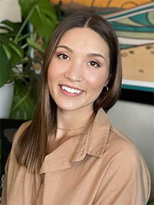

Dr. Mari
Isa, PhD
Advancing forensic anthropology through experimental skeletal research, inclusive identification, and medicolegal casework.
ARID Laboratory

Texas Tech University · 2025–2026
Integrated Scholar
Selected by the Office of the Provost as one of six faculty members university-wide who demonstrate outstanding synergy among teaching, research, and service — and who consistently promote active learning by infusing research results into the classroom.
Research
12 peer-reviewed articles, FBI Laboratory publication, 4 book chapters, 35 conference presentations
Teaching
24 students mentored, 7 courses developed, Outstanding Faculty Mentor Award
Service
NIST OSAC leadership, 55 casework reports, AAFS Standards Board, international fieldwork
Academic Honors
Phi Beta Kappa
2013
Phi Kappa Phi
2012
National Merit Scholar
2010–2014
MSU Alumni Distinguished
2010–2014
Kerley Paper Award
AAFS 2014
Rasmussen Fellowship
MSU 2014
A Commitment to Vulnerable Identities
Core Philosophy
"We are responsible for the ethical treatment of the dead, to the living affected by our actions via our treatment of the dead, and to those with whom we interact professionally."
National Science Foundation Graduate Research Fellowship (NSF GRFP) funded doctoral research on blunt force skeletal trauma.
Dr. Mari Isa is an Assistant Professor of Anthropology at Texas Tech University, Director of the Anthropology Research & IDentification (ARID) Laboratory, and Adjunct Faculty in Environmental Toxicology with affiliate status in Women's and Gender Studies. She holds a PhD and MA in Anthropology and dual BS degrees with High Honors from Michigan State University.
Her research bridges bone biomechanics and humanitarian forensics. At the ARID Lab, she investigates how social inequality leaves biological traces, focusing on underrepresented decedent populations who are often misidentified or remain unidentified due to limitations in standard forensic protocols.
Funded by a prestigious National Science Foundation Graduate Research Fellowship (NSF GRFP), her doctoral work on blunt force skeletal trauma established her as a leading voice in forensic fractography — a mechanistic approach that moves beyond subjective morphology to understand cranial and mandibular fracture initiation and long bone fracture behavior using material science principles.

The ARID Lab
Anthropology Research & IDentification Laboratory: Advancing forensic science through innovation, education, and equity.
Explore Laboratory InitiativesKey Research
Highlighting the diverse pillars of forensic inquiry and identification equity.

A Guide to Forensic Fractography of Bone
Co-authored landmark FBI Laboratory publication establishing standardized protocols for skeletal trauma analysis using material science — moving beyond subjective morphology to understand fracture initiation in cranium, mandible, and long bones.
View Case Study arrow_right_alt
COSAGE & Trans Doe Advocacy
Developing the COSAGE guide — a crowdsourced biocultural tool for documenting contextual evidence in human identification efforts — in collaboration with the Trans Doe Task Force and community advocacy organizations.
View Case Study arrow_right_altAffiliations & Partnerships
Join the Conversation
Whether you are a prospective student, a fellow researcher, or interested in forensic advocacy, I would love to hear from you.